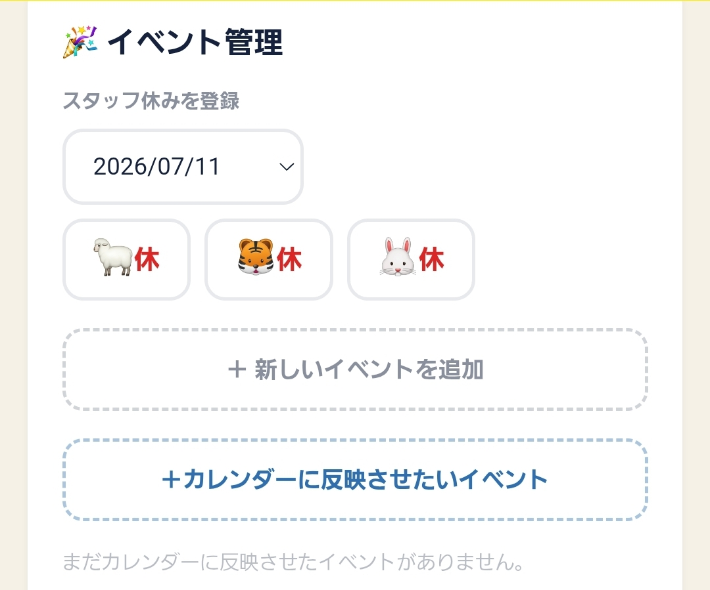
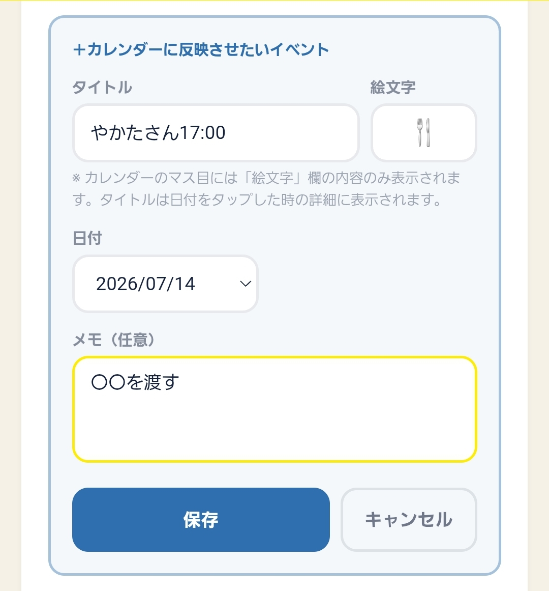
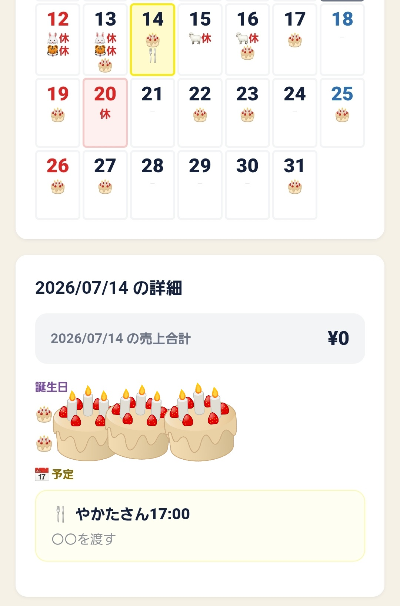

予約や渡し忘れたくない用事などを、カレンダーの日付そのものに絵文字で表示できます。
メニューの ⚙️ 設定 を押し、「イベント管理」を開きます。

スタッフ休みの登録欄、「＋ 新しいイベントを追加」の下にあります。

例：タイトル「やかたさん17:00」、絵文字「🍴」、日付「2026/07/14」、メモ（任意）「〇〇を渡す」。
絵文字は、カレンダーのマス目に表示される唯一の内容なので、必ず入力してください。タイトルは日付をタップしたときの詳細に表示されます。メモは省略できます。
保存 を押せば登録完了です。「カレンダーに反映しました。」と出れば成功です。

マス目には絵文字だけが表示されます。その日をタップして「選択日の詳細」を開くと、タイトル全文とメモが確認できます。同じ内容は「お知らせ」画面にも表示されます。